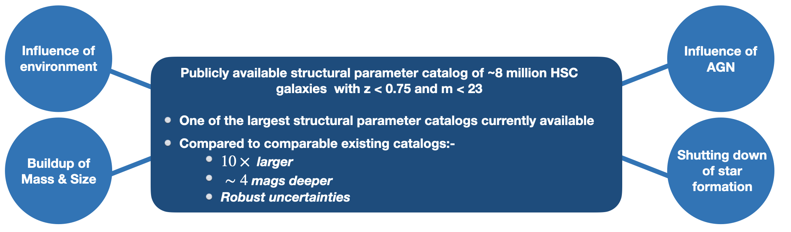
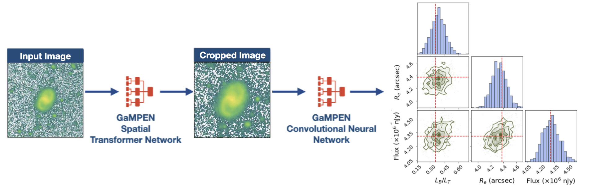
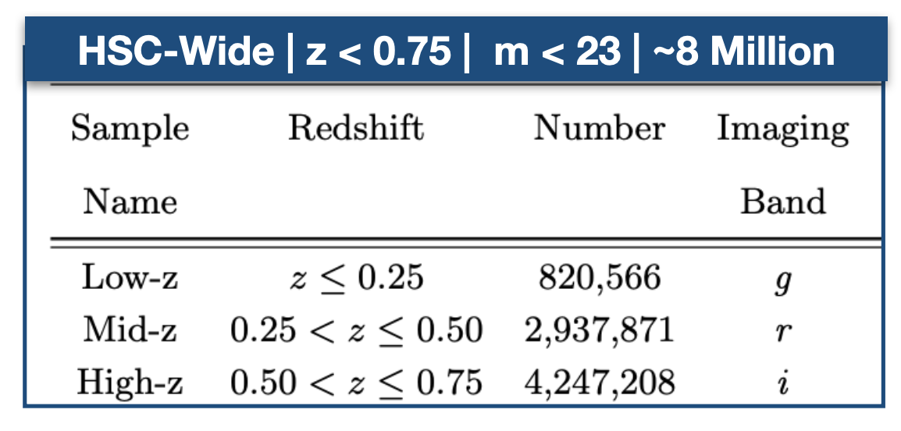
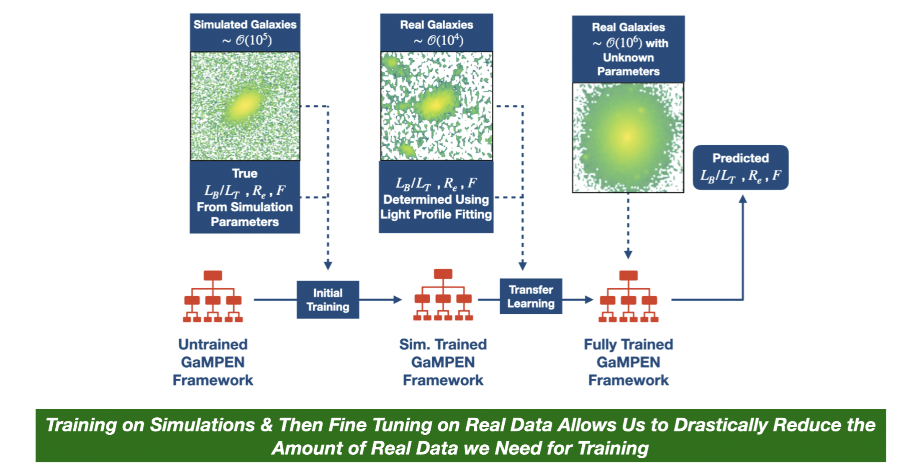
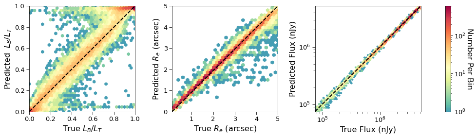
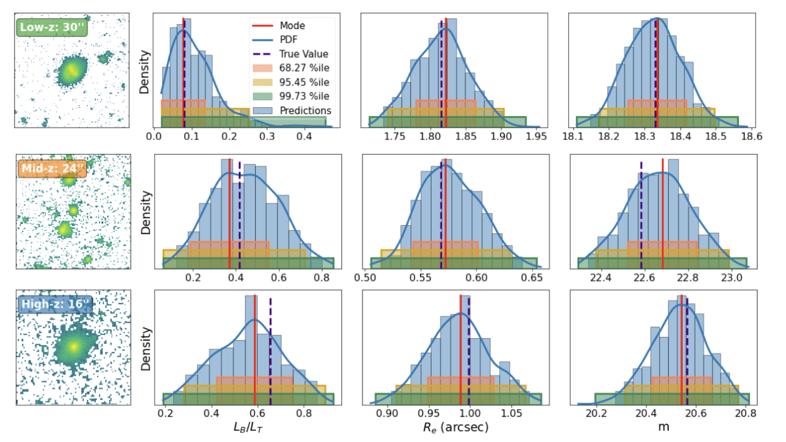
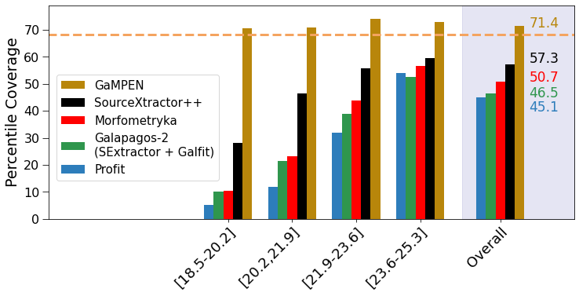

Hyper Suprime-Cam Structural Parameter Catalog
Morphological Parameters and Associated Uncertainties for 8 Million Galaxies in the Hyper Suprime-Cam Wide Survey
Dataset & Algorithm Used
We used the Galaxy Morphology Posterior Estimation Network (GaMPEN) to estimate the structural parameters (bulge-to-total light ratio, effective radius, and total magnitude) and associated uncertainties for all galaxies in the Hyper Suprime-Cam (HSC) Wide survey with $z \leq 0.75$ and $m \leq 23$.
We use different imaging bands across different redshift ranges to trace the same ground-frame wavelength. The breakdown of our sample into the three different redshift bins is shown below.
Training GaMPEN using $ < 1 \% $ of our Data
We first train GaMPEN on simulations of galaxies and then fine-tune the already trained network using $ <1 \% $ of our total dataset for training. This is an important demonstration that ML frameworks can be used to measure galaxy properties in new surveys, which do not have already-classified large training sets readily available. Our implemented two-step process provides a new framework that can be easily used for upcoming large imaging surveys like the Rubin-LSST, Euclid, and NGRST.
Accuracy of GaMPEN's Predictions
We compare the GaMPEN's predictions against ground-truth values in simulations, as well as the predictions of traditional light-profile fitting codes. GaMPEN's measurements are consistent overall and outperform those of GALFIT for galaxies with $R_e \leq 2$" ($\sim 12.6$ kpc at $z=0.5$)
GaMPEN's predicted values against ground truth is show below for a set of simulated HSC galaxies
We show below a few examples of applying GaMPEN on real HSC galaxies
Accuracy of GaMPEN's Posteriors
By comparing our results to those obtained using light-profile fitting, we demonstrate that GaMPEN's predicted posterior distributions are well-calibrated ($\lesssim 5\%$ deviation) and accurate. This represents a significant improvement over light profile fitting algorithms which underestimate uncertainties by as much as $\sim60\%$.
Below, we plot the percentile coverage probabilities for the $68.27\%$ confidence interval obtained by GaMPEN on our HSC sample compared to coverage probabilities obtained by various light-profile fitting algorithms on simulated Euclid data. The coverage probabilities are defined as the percentage of the total test examples where the value determined using light profile fitting lies within a particular confidence interval of the predicted distribution.
